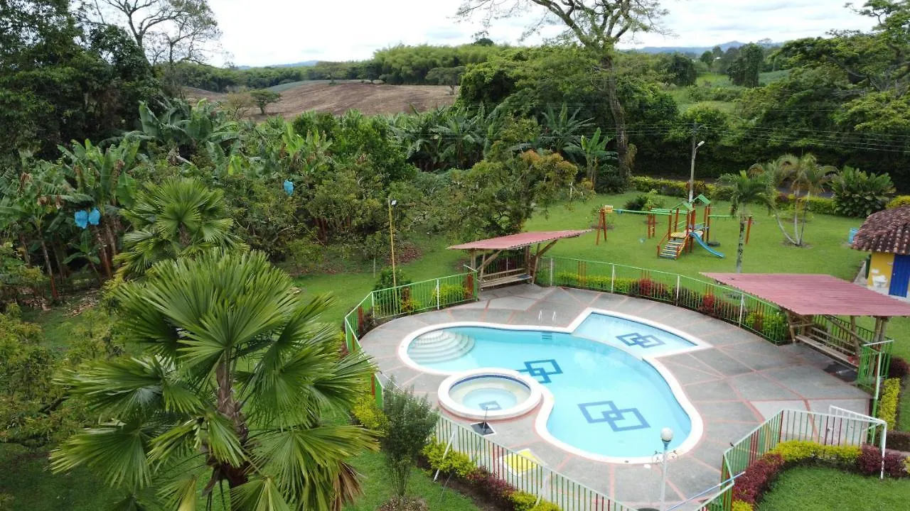

Filandia es conocida como el pueblo más limpio de Colombia y por su mirador con vistas panorámicas del Quindío. Visitamos Filandia con planes desde $425.000 COP que incluyen transporte, visita al mirador, compras de artesanías, gastronomía típica, coffee tours y alojamiento en hoteles boutique con arquitectura tradicional.
Descubre el pueblo más alto del Quindío con su mirador cóndor, artesanías en guadua y arquitectura tradicional. Tours completos con Quindío Travel RNT 18152.
Reserva hoy y viaja esta semana - Cupos limitados para temporada alta



Ubicada a 2.000 metros sobre el nivel del mar, Filandia es conocida por su mirador cóndor con vistas impresionantes del Valle de Cocora y su tradición en artesanías de guadua.
El mirador más alto del Quindío con vistas panorámicas de 360 grados del Valle de Cocora, Salento y todo el Eje Cafetero. Imperdible para fotógrafos.
Filandia es famosa por sus talleres de artesanía en guadua, un material tradicional y sostenible. Puedes aprender técnicas ancestrales con artesanos locales.
Templo colonial del siglo XIX con arquitectura tradicional y estilo neogótico, considerado patrimonio cultural del departamento.
Las casas de Filandia conservan el estilo colonial del Quindío con balcones de madera, tejas de barro y colores típicos de la región.
Nuestros planes turísticos incluyen Filandia como parte de la experiencia completa del Eje Cafetero.
Explora dos pueblos patrimonio en un día. Arquitectura tradicional, artesanías y gastronomía local con transporte incluido.
Vistas panorámicas desde el mirador más alto del Quindío y caminata por el Valle de Cocora en un día completo.
Tour por los talleres de guadua de Filandia, Salento y Armenia con degustación de productos locales y café.
Estos planes incluyen visitas a Filandia como parte del itinerario completo del Eje Cafetero.
Experiencia Completa
$1.700.000 / Con transporte
Valle de Cocora · Salento · Filandia · Parques · Alojamiento
Experiencia Definitiva
$1.473.000 / Con transporte
TODOS los atractivos · Valle de Cocora · Filandia · Termales · Pueblos
Filandia está ubicada a 45 minutos de Armenia, a 2.000 msnm. Se puede llegar en transporte privado desde Armenia o Salento.
Todo el año es hermoso, con clima fresco debido a la altitud. Los meses secos son ideales para disfrutar del mirador sin nubes.
Ropa abrigada (el clima es fresco), cámara para fotos panorámicas, calzado cómodo y protector solar para las terrazas.
Prueba los productos de guadua, café local, arepas quindianas y platos tradicionales en los restaurantes con vistas panorámicas.
Información esencial para moverser por Filandia y sus alrededores de forma segura y conveniente.
Bus directo: $18.000 COP desde el terminal de Armenia (45-50 minutos). Salidas cada hora desde las 6:00 AM hasta las 6:00 PM.
Taxi privado: $70.000-$90.000 COP (35-40 minutos). Disponible 24/7.
Transporte privado Quindío Travel: Incluido en nuestros planes turísticos.
Taxi local: $10.000-$15.000 COP desde la plaza principal (10 minutos).
Caminata: 20-25 minutos por carretera pavimentada con sendero peatonal.
Willys turístico: $25.000 COP por persona (incluye guía local).
Puesto de Salud Filandia: Ubicado en el centro del pueblo. Atención básica 24/7.
Hospital Armenia: A 40 minutos. Hospital Departamental Universitario del Quindío (emergencias).
Ambulancia: Línea 123 para emergencias médicas en todo Colombia.
Policía Turística: Estación cerca de la plaza principal de Filandia.
Cajeros: Bancolombia y Davivienda en la plaza principal.
WiFi: Disponible en restaurantes y cafeterías del centro histórico.
Farmacias: 2 farmacias en el centro con horario extendido.
Supermercados: Tiendas de abastos para provisiones básicas.
Parqueadero público: $4.000 COP por día (cerca de la plaza).
Parqueadero del mirador: $3.000 COP (estacionamiento gratuito en restaurantes).
Parqueadero de hoteles: Generalmente incluido en la tarifa de alojamiento.
Quindío Travel (Operador Local): +57-317-4426044 (WhatsApp 24/7)
Oficina de Turismo Filandia: Ubicada en la plaza principal.
Alcaldía Filandia: +57-6-7411234
Línea Nacional de Turismo: 01-8000-910-270
Entidades oficiales de turismo en el Quindío para información verificada y segura.
Entidad oficial encargada de promover y regular el turismo en el departamento. Ubicada en Armenia, Quindío.
Contacto: +57-6-7313030 | turismo@quindio.gov.co
Website: www.quindio.gov.co
Registro de establecimientos turísticos y verificación de RNT (Registro Nacional de Turismo).
Contacto: +57-6-7340300 | info@camaradecomercioquindio.com
Website: www.camaradecomercioquindio.com
Administración local de Filandia. Información sobre eventos locales y regulaciones turísticas.
Contacto: +57-6-7411234 | alcalde@filandia-quindio.gov.co
Website: www.filandia-quindio.gov.co
Entidad nacional que regula el turismo y emite el RNT (Registro Nacional de Turismo).
Contacto: 01-8000-910-270 | atencionalciudadano@mincit.gov.co
Website: www.mincit.gov.co
Cotiza tu tour a Filandia con Quindío Travel y recibe una respuesta en menos de 2 horas.